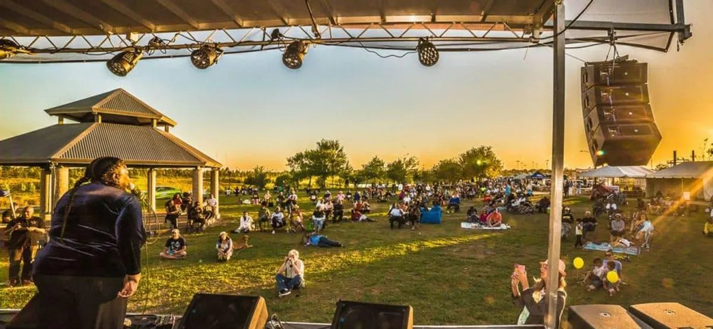
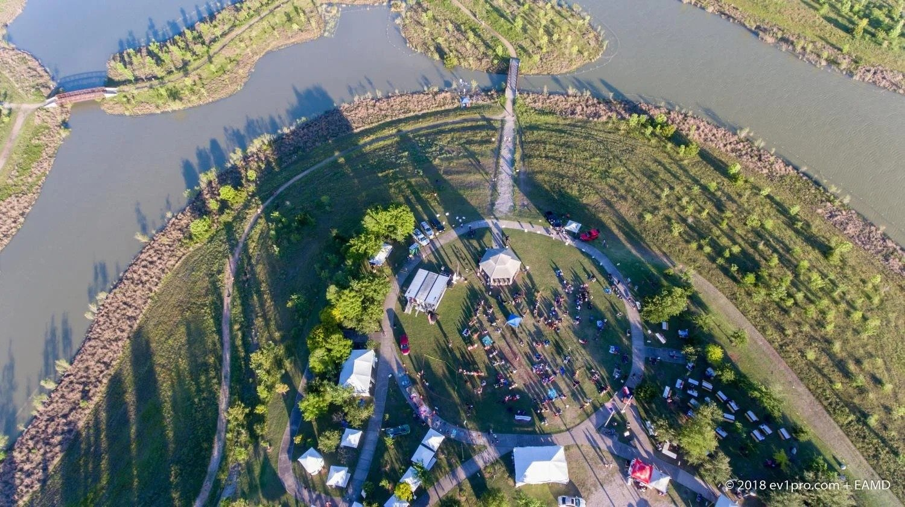
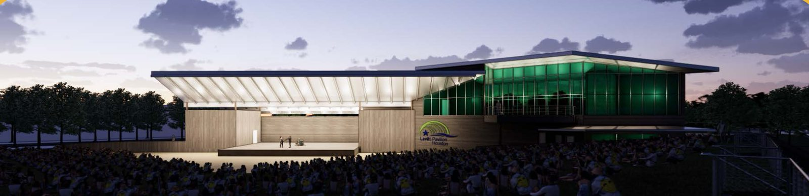
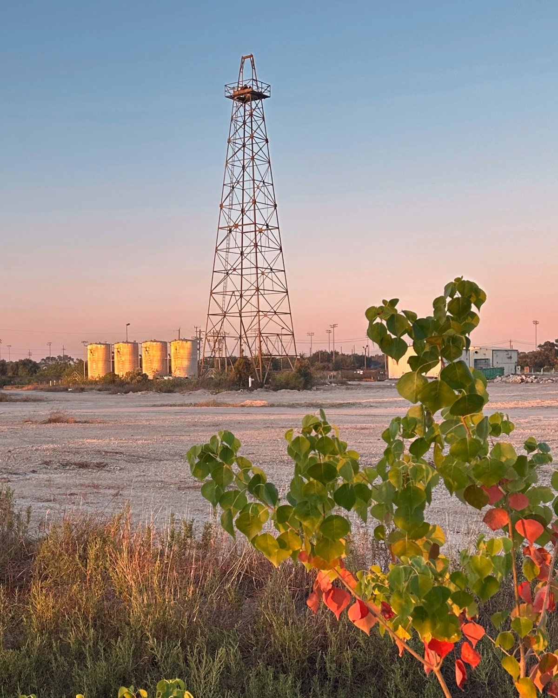

Levitt Pavilion Houston will create a permanent home for free live music, a welcoming outdoor destination where people from across Houston can gather, connect, and experience music together.
Levitt Pavilion Houston is planned for the former Shell Gasmer property beside Willow Waterhole Greenway.
For more than 25 years, neighbors have helped transform Willow Waterhole into a remarkable landscape of lakes, trails, prairie, and gathering spaces. The former Shell property is being envisioned as a welcoming new entrance to the Greenway.
Levitt Houston will bring these two stories together, creating a destination where music, nature, and community meet.

MusicFest beside Willow Waterhole Greenway.
Since 2013, MusicFest has brought students, professional artists, families, and neighbors together for free music in the open air at Willow Waterhole.

MusicFest at Willow Waterhole. Photo: © 2018 ev1pro.com + EAMD.

Early concept rendering. The pavilion design will continue to develop through the planning process.
The future pavilion will pair a professional outdoor stage with an open lawn where families and friends can bring blankets and lawn chairs, enjoy food and music, and share an evening beneath the Houston sky.
Levitt Houston will present 40 free professional concerts each year, along with opportunities for students, emerging artists, and community performers.
The historic steel derrick will remain as a distinctive landmark within the former Shell property. It will preserve a visible link to Houston’s energy heritage while marking a new chapter centered on music, public space, and community life.
Future interpretive information at the site can help share the story of the former Shell Gasmer property and its place in Houston’s energy history.

Professional concerts open and accessible to the entire community.
A permanent venue bringing greater cultural activity and visibility to this part of the city.
A welcoming setting where people of different ages, backgrounds, and neighborhoods can enjoy music together.
A platform for students, emerging artists, community performers, and Houston’s diverse cultural traditions.
A civic destination designed to serve Southwest Houston for generations.
The Levitt Foundation has helped set the project in motion. Community support is needed to build the pavilion and create a permanent home for free live music in Southwest Houston.
Every gift moves us closer to opening night.